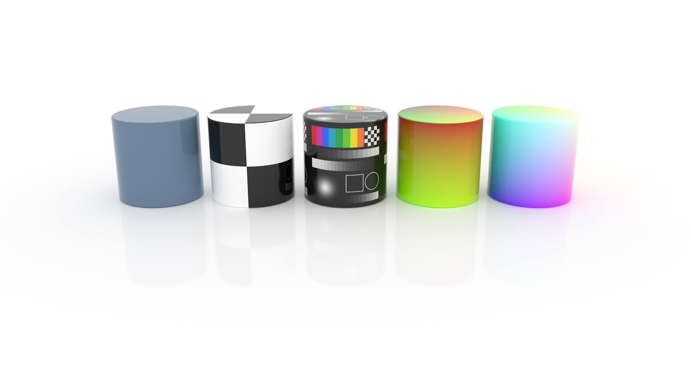
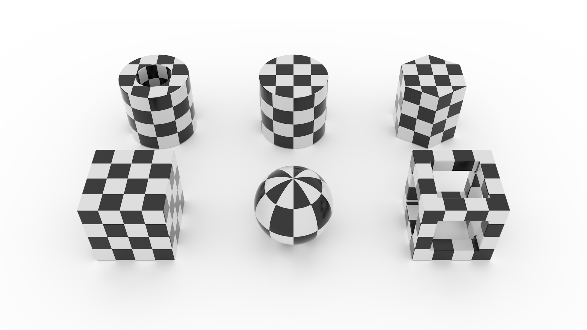
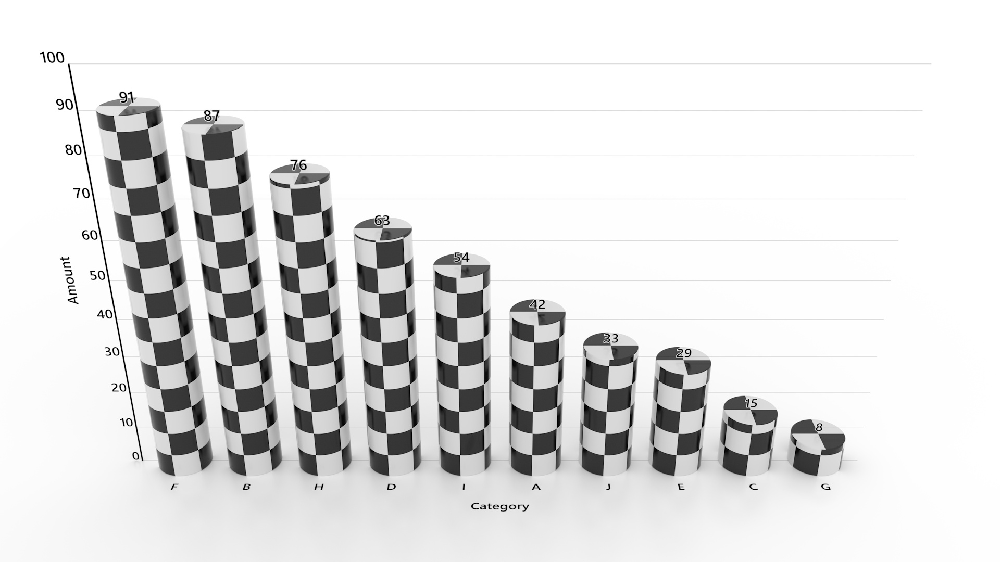

Home
Try Online
Samples
Gallery
Docs
GitHub
Textures
Previous
Next
MorphCharts supports textured marks.

Figure 1. A selection of texture types.

Figure 2. Textured geometric primitives.

Figure 3. A bar chart with checker textures.
Previous
Next